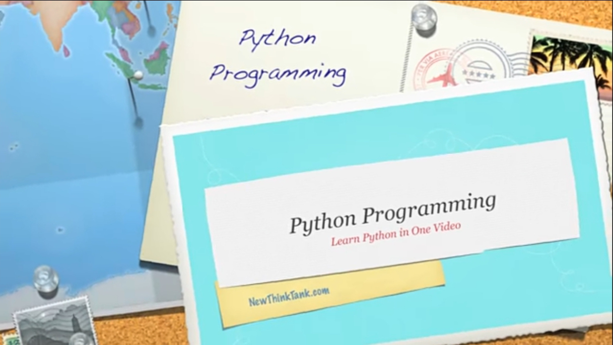
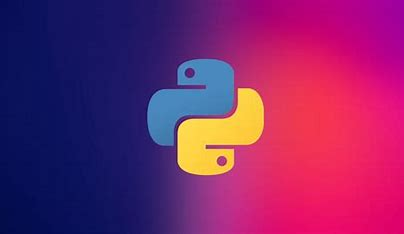

WHAT IS PYTHON?
Python is an interpreted, object-oriented, high-level programming language that is widely used in web applications, software development, data science, and machine learning (ML). Developers use Python because it is efficient and easy to learn and can run on many different platforms. Python software is free to download, integrates well with all types of systems, and increases development speed.
What are the benefits of Python?
Developers can easily read and understand a Python program because it has basic, English-like syntax.
Python makes developers more productive because they can write a Python program using fewer lines of code compared to many other.
Python has a large standard library that contains reusable codes for almost any task. As a result, developers do not have to write code from scratch.
Developers can easily use Python with other popular programming languages such as Java, C, and C++.
Plenty of helpful resources are available on the internet if you want to learn Python. For example, you can easily find videos, tutorials, documentation, and developer guides.
Python is portable across different computer operating systems such as Windows, macOS, Linux, and Unix.
RESOURCES FOR PYTHON
Python Tutorial for beginnners
Python oops concept
Installing IDE platforms
 COMPLETE PYTHON TUTORIAL BY AWS  PYTHON CODEACADEMY COURSE PYTHON W3SCHOOLS
PYTHON W3SCHOOLS
DISADVANTAGES OF PYTHON
Python is measurably slower at runtime compared to other programming languages like Java, C++, PHP, Javascript, Swift, etc.
Even though Python is a server-side language, it is not the best one when it comes to mobile application development. Android and iOS application development were pretty much out of the question with Python.
Python is known for its simplicity but Shifting to a new language from Python is difficult as the programmer might find it difficult to adjust to the new features. It will take some time to get familiar with the new language.
For memory-intensive tasks, Python is not always the best choice. The memory consumption of Python is high due to the flexibility of the data types.
Python failed in enterprise community because of its limitations to database access. As compared to popular technologies like JDBC and ODBC, the database access layer of Python is found to be a bit underdeveloped and primitive.
At the end choosing a programming language depends on developer interests and what task is to be performed
WHAT IS AWS?
AWS is popular because it is reliable, scalable, and cost-effective. It has a wide range of services that can be customized to fit the needs of any organization. Additionally, it has a large and active community, which makes it easy to find help and support.
BENEFITS OF AWS
The agility of cloud gives you easy access to a broad range of technologies so that you can innovate faster and build nearly anything that you can imagine. You can quickly spin up resources as you need them–from infrastructure services, such as compute, storage, and databases, to Internet of Things, machine learning, data lakes and analytics, and much more.
With elasticity cloud computing, you don’t have to over-provision resources up front to handle peak levels of business activity in the future. Instead, you provision the amount of resources that you actually need. You can scale these resources up or down to instantly grow and shrink capacity as your business needs change.
The cloud allows you to trade fixed expenses (such as data centers and physical servers) for variable expenses, and only pay for IT as you consume it. Plus, the variable expenses are much lower than what you would pay to do it yourself because of the economies of scale.
RESOURCES FOR AWS
How to start with AWS
AWS Complete Tutorial
Tutorial for AWS Certification
AWS official website AWS Free Tier Details AWS Free Workshops